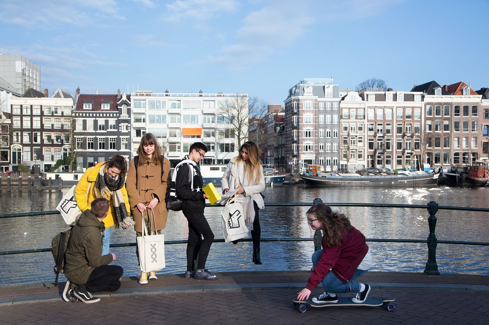
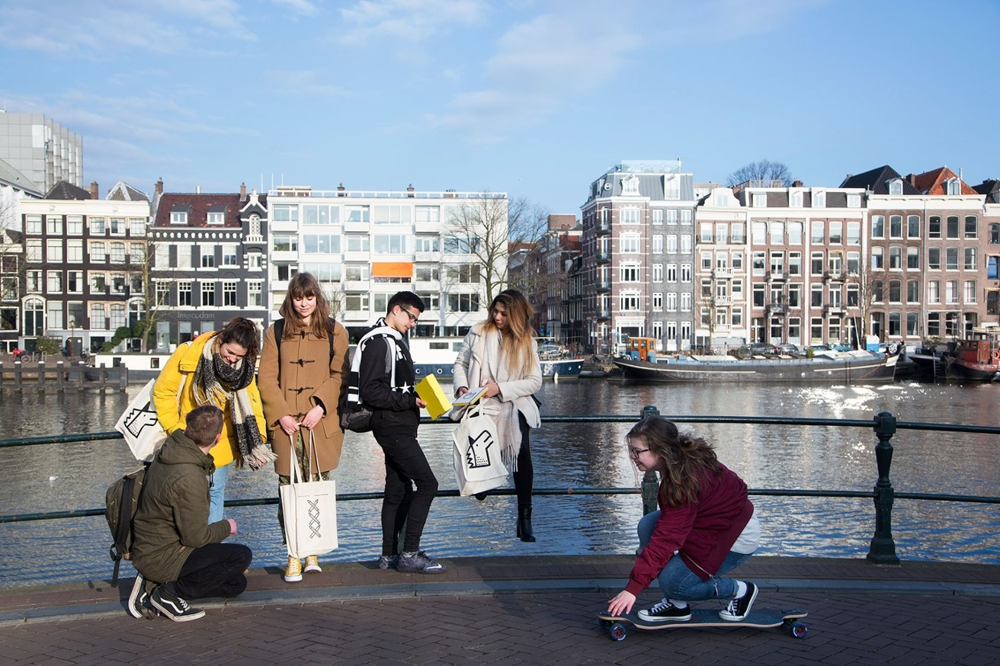

Van 2017 tot 2022 heb ik de Bachelor's opleiding Communication and Multimedia Design gevolgd, daarna heb ik een Master of Arts in Applied Ethics behaald. Ik houd me graag bezig met de behoeften van gebruikers, en hoe deze het best vervuld kunnen worden. Ontwerpkeuzes kunnen heel veel invloed hebben op mensen, daarom vind ik dat ethiek hier een cruciale rol in speelt. Een goede, aangename en respectvolle gebruikerservaring creëren is iets waar mijn passie ligt en waar ik me in de toekomst graag mee bezig wil houden. Ik sta altijd open voor nieuwe mogelijkheden en connect graag met mensen met gelijke, of juist hele verschillende, interesses als ik.
 
